Siena & San Gimignano
Small Group Tour with
Homemade Lunch
— or Private Tour
Escape the crowds and immerse yourself in medieval history, indulging at a hidden family estate for a true homemade Tuscan feast.
Small group up to 25 with licensed guide and lunch, or private up to 8. On the private tour we collect you wherever you are: your hotel in Florence, an apartment, or an address outside the city.


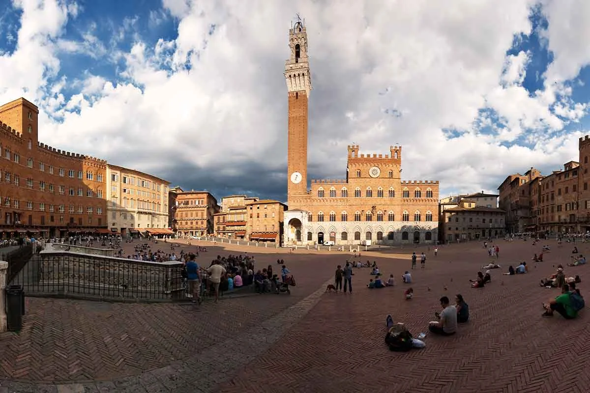
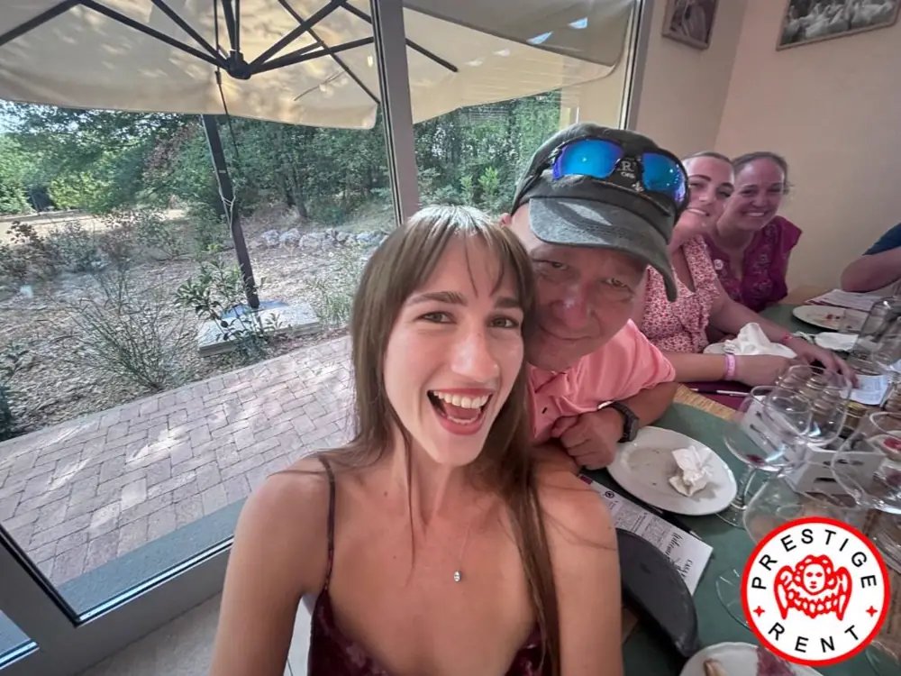
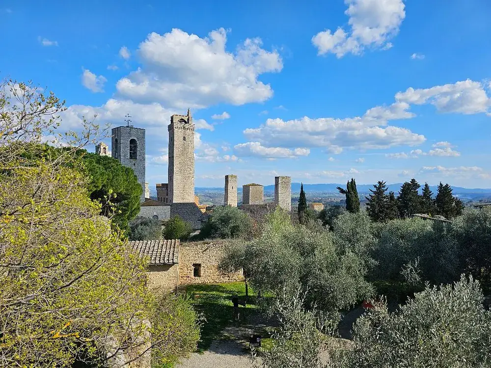
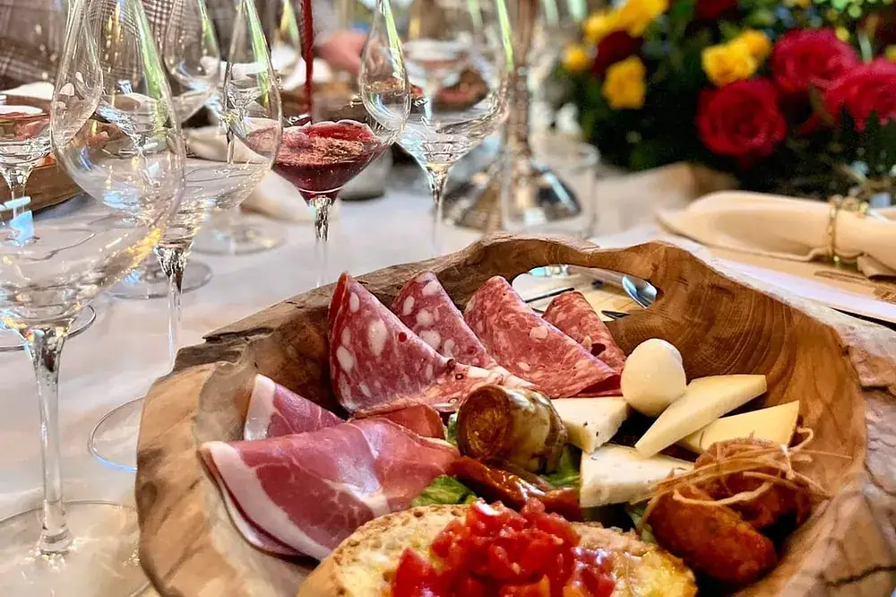


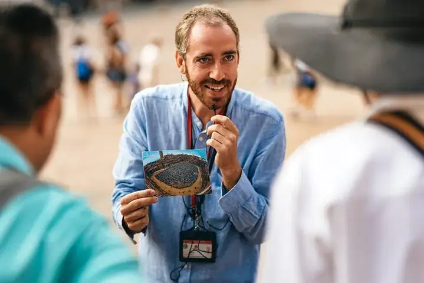


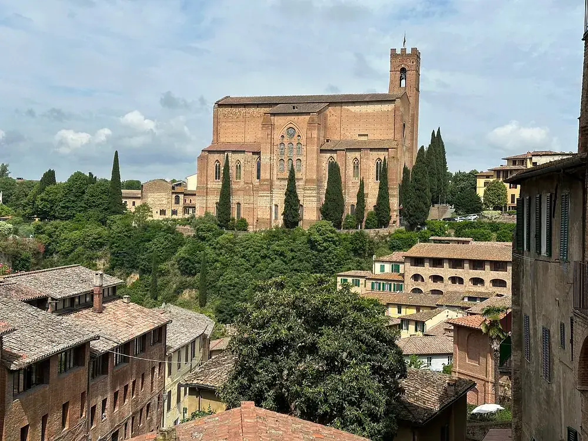
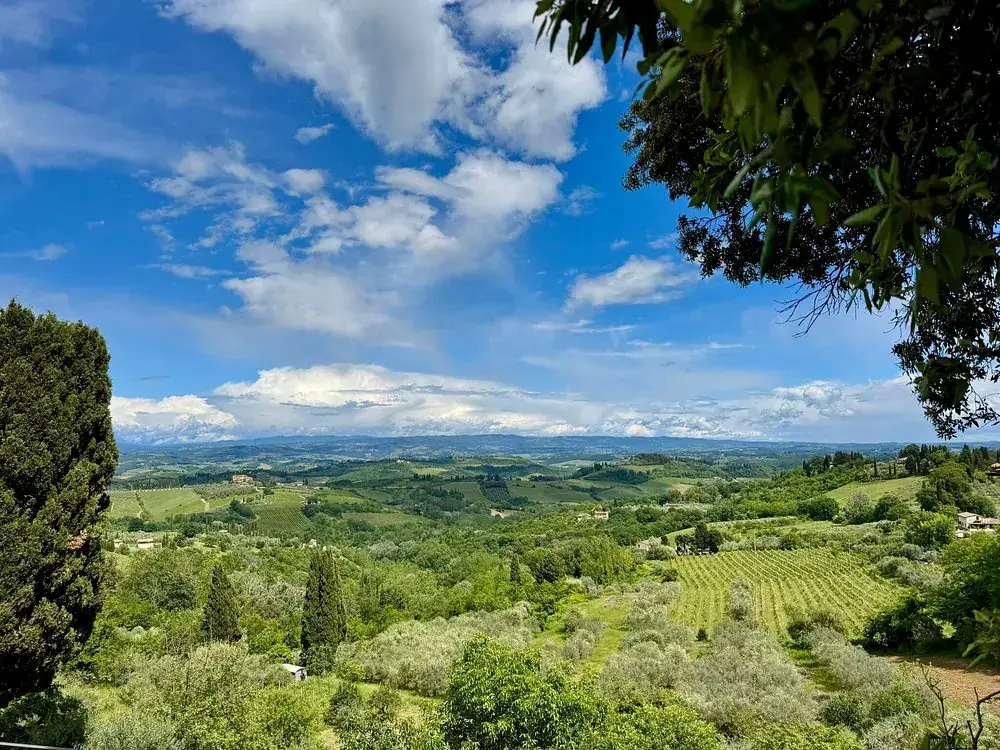

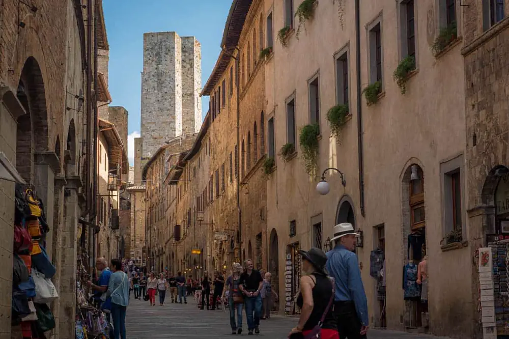
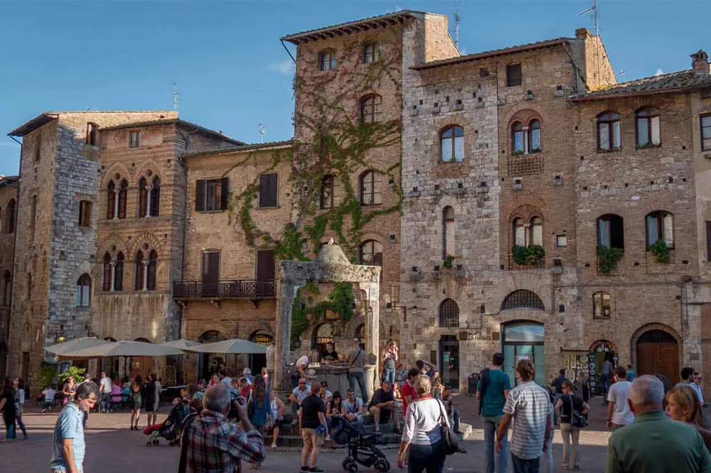
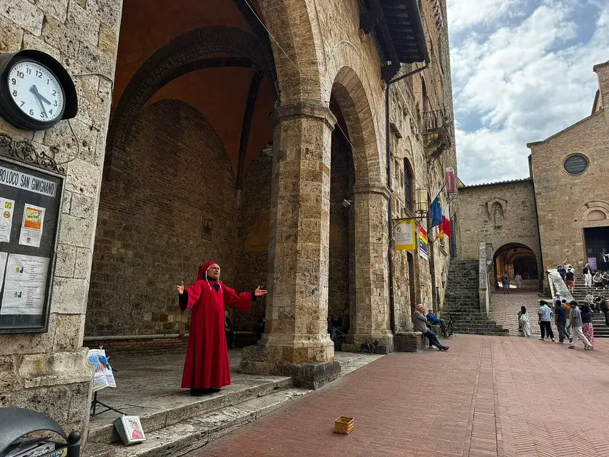
Two ways to see Siena & San Gimignano
A day with us, on camera
Short clips filmed on our own departures — drag to see them all.
Small group tour — everything you need to know
Up to 25 guests, licensed guide and lunch at a family winery included — €149 per person.
- Small-Group max 25 participants: a safe, intimate and comfortable experience
- Discover the gems of Tuscany, see medieval cities and walk ancient narrow roads
- Guided walking tour in Siena, a beautiful medieval city
- Admire the Tuscan countryside and its amazing views (vineyards, rolling hills, olive trees)
- Tuscan lunch included paired with excellent wines at a family-owned estate
- Conclude your day wandering the hilltop town of San Gimignano
- Visit Siena, San Gimignano & the Tuscan countryside
- Tour is in English only, no confusion with multiple languages
Included:
- Small group: max 25 people (standard tours run with 50+ people)
- Free Cancellation up to 24 hours in advance
- A professional and informative English speaking licensed tour guide
- Roundtrip transportation by AC & fully equipped vehicle with free Wi-Fi onboard
- Guided walking tour of Siena highlights
- Free time to enjoy Siena on your own
- Delicious light lunch with assorted cold cuts, cured ham, salami, cheese, bruschetta, pasta, salad, dessert, coffee, 3/4 different wines, olive oil and Vin Santo
- Drive through the marvelous Tuscan countryside
- Introductory tour and free time to visit San Gimignano at your own pace
Not Included:
- Hotel pick-up/drop off
- Gratuities (optional and at your complete discretion)
Optional:
- Entrance fees and guided visit of the Siena Cathedral, Euro 15,00 per person, payable directly on the day to the guide. Not available on Sundays or during celebration
Prices below are per person, and vary depending on the age of participants
Tour + lunch: includes roundtrip transportation, a guided walking tour of Siena, and light lunch (no entrance fee to visit the interiors of the Siena Cathedral)
- Euro 149.00 - Adult (13-99)
- Euro 99.00 - Child (4-12)
- Infants and toddlers younger than 4 is free
Optional:
- Entrance fees and guided visit of the Siena Cathedral, Euro 15,00 per person, payable directly on the day to the guide. Not available on Sundays or during celebration
Private tour: from Euro 550,00, and the price changes with the number of guests — up to 8 family or friends per car. It includes the vehicle just for your party and your fluent English-speaking driver for the whole day; it does not include the winery lunch or a licensed walking guide. The exact price for your party appears in the calendar as soon as you pick the date and the number of guests.
Super friendly cancellation policy: free cancellation up to 24 hours prior departure time.
Group size: tour runs with min. 6 and max 25 participants. In the rare event the minimum is not reached, we will contact you in advance. If our alternatives don't fit your schedule, you'll be fully refunded and have plenty of time to find suitable options
Age: infants and younger than 4 are allowed on this tour for free, and must be declared at the time of booking
Group tour: this is a shared tour and you will be expected to maintain the regular pace of the group. If you have limited mobility, please consider our private version of the Siena and San Gimignano tour, for your best enjoyment
Activity level: easy/average, moderate walking and a few stairs. However, due to uneven surfaces and stairs, the tour is not suitable for people with mobility difficulties and wheelchair users
Driving time: - Florence to Siena approx. 1.5 hour - Siena to San Gimignano approx. 45 mins - San Gimignano to Florence approx. 1 hour and 15 mins
Sightseeing time: - Siena 2.5/3 hours (including free time) - lunch stop approx. 1.5 hour - San Gimignano approx. 1.5 hour
Allergy-friendly: vegetarian and gluten-free can be catered for, if requested at the time of booking.
Siena Cathedral: not accessible inside on Sundays (due to the Mass) or during celebrations
Luggage: you can bring your luggage with you and store them on the bus
Language: the tour is in English only, no confusion with multiple languages.
What to wear: tour runs rain or shine, please dress accordingly
This page applies to the small group departure. On the private tour there is no meeting point and no check-in: your fluent English-speaking driver collects you at your hotel in Florence, at the time you choose, and brings you back where it suits you.
Checkin time: 7:45am
Meeting point: PIAZZALE MONTELUNGO (Montelungo Square/bus terminal) – opposite to the parking lot. It takes about 8 minutes by walk, from the Florence Santa Maria Novella Train Station. If you are not familiar with the area, please allow plenty of time.
A practical tip: the square is a bus terminal, so there are no cafes or toilets. Have your coffee and use the facilities before you get there.
How to recognize your tour: Look for a red flag/checkin table, with Prestige Rent logo. If you arrive in advance (good idea!) and you cannot recognize your guide do not panic, your guide will be there at 7:45am.
Return time: The tour ends at the same place of departure, normally around 6:00pm. The exact return time depends on traffic. In case you need to book other activities, train tickets, dinners, we highly recommend allowing plenty of time.
Please arrive on time. The vehicle cannot wait for latecomers, out of respect for the other guests. If something goes wrong on the morning, call us straight away on +39 055 286059 — we would much rather help you than see you miss the day.

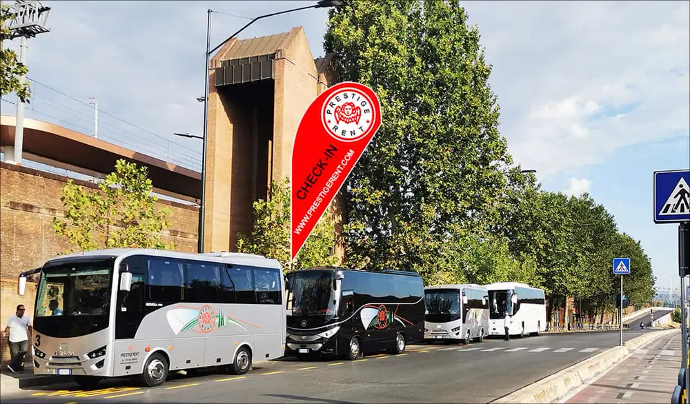
- 7:45am — Check-in at the meeting point
- 8:00am — Depart from Florence
- 9:30am — Arrive in Siena
- 9:30am to 10:45am — Guided visit of Siena highlights
- 10:45am to 12:00pm — Free time in Siena
- Optional – 10:45am to 11:15am – Guided visit of the interiors of Siena Cathedral
- 12:45pm — Stop at a Tuscan winery
- 12:45pm to 2:30pm — Time for lunch
- 3:00pm — Arrive in San Gimignano
- 3:00pm to 4:30pm — Free visit of San Gimignano
- 5:45pm approx. — Arrive in Florence
Times are indicative and may vary with traffic and weather.
Enjoy a day trip to Siena & San Gimignano
Join our small-group tour to visit 2 Tuscan gems and an ancient winery: the perfect mix of art, history, gorgeous Tuscan views, food and wine!
See the highlights of Siena on a guided walking tour, admire the marvelous Tuscan landscape, taste genuine local food paired with great wines and finish your day relaxing in the hilltop village of San Gimignano.
Guided visit to Siena
Discover the beautiful art city of Siena with a knowledgeable guide will take you on a walk through the town's picturesque narrow streets. See the shell-shaped Piazza del Campo, one of the most beautiful squares in Italy, a brick-paved square where the famous 'Palio' horserace is held twice a year.
Admire the magnificent Cathedral and the tall and trim Torre del Mangia. After the guided tour, enjoy your free time to wonder Siena at your own pace, to shop around or have an Italian espresso.
Tuscan countryside and winery lunch
On the way to San Gimignano, admire the unique Tuscan landscape driving through marvelous postcard views surrounded by olive trees, vines and old stone buildings.
Next stop is at a family owned wine estate located in the typical Tuscan landscape with amazing views of vines and olive trees. Here you will have time to relax and enjoy a proper Tuscan lunch that gives you a taste of country hospitality.
The menu includes assorted cold cuts, cured ham, salami, cheeses, bruschetta, pasta, or soup, salad, dessert and coffee, paired with the winery's own excellent wine, olive oil and vin santo (sweet dessert wine).
San Gimignano
After lunch, we will reach San Gimignano and end the day in complete relax. Famous for its splendid skyline of tall Medieval towers, here you will have free time to explore the main street full of typical shops, have a look at the "Collegiata" (main church), or enjoy a gelato!
Your perfect day trip to Siena, San Gimignano & the Tuscan countryside ends with a comfortable ride back to Florence.
Opens the small group calendar — €149 per person, lunch and guide included.
💳 Reserve now, pay later | 🛡️ Free date changes & full refund — up to 24h before departure
Private tour — everything you need to know
Your family or friends only, up to 8 per car — your own English-speaking driver and your own timings, from €550.
- Private is just for you — top safety, comfort, privacy and flexibility
- Explore the beautiful medieval city of Siena
- Walk in the shell-shaped Piazza del Campo
- Stop in Monteriggioni for a picture of the 13th century hilltop fortress
- Drive through postcard views of the Tuscan countryside
- Have a Tuscan meal in a local trattoria
- Stroll around San Gimignano and its medieval towers
- Taste vernaccia wine and have the best gelato
Included:
- The vehicle just for your family or friends — a Mercedes sedan or van, nobody else on board
- Your own driver, who speaks fluent English, with you for the whole day
- Pick-up and drop-off wherever suits you in Florence, at the time you choose
- Bottled water, free Wi-Fi on board, all tolls, parking and fuel
- Free cancellation up to 24 hours before departure
- A stop in Monteriggioni, the walled village the shared departure does not make
Not included:
- Lunch — you choose where and when to eat, and your driver knows the good places
- A licensed walking guide inside the historic centres (see Important info)
- Entrance fees to monuments and museums
From Euro 550,00, and the price changes with the number of guests: it is a price for the vehicle and the driver, not a fixed figure per person.
- Up to 8 family or friends per car
- For a larger family or group we add a second car with its own English-speaking driver, and you travel together
- Children and infants are welcome and travel in the same car
The exact price for your party appears in the calendar as soon as you pick the date and the number of guests. Nothing is added at checkout.
Your driver speaks fluent English. Not a few words: fluent. They drive these roads every week and will tell you what you are looking at, where to stop for a photo, which trattoria is worth it and how long you really need in each town. Anything you want to ask during the day, you can ask.
What a driver may not do, by Italian law, is lead a guided tour inside the historic centres: that is reserved to licensed guides, and a licensed guide comes with the small group departure. It is a rule of the State, not a limit of ours.
In practice this means you are free. In Siena and San Gimignano you walk on your own, at your own pace, stopping where you like and for as long as you like — no group to follow, no umbrella to chase, no fixed time to be back at the meeting point. Your driver waits for you and takes you on when you are ready.
Want a licensed guide anyway? Tell us when you book and we arrange one to meet you in town, for the hours you want.
What to wear: comfortable shoes, the historic centres are cobbled and there is some walking up and down. The day runs rain or shine.
There is no meeting point and no check-in. This is the part that changes most compared with the shared departure: you do not have to find a square, be there at 7:45am or look for a flag.
Pick-up: at your hotel, apartment or any address in Florence. Nine in the morning is the usual start, but the time is yours — tell us when you book, or send a message afterwards.
Return: back to Florence at the end of the day, dropped wherever it suits you, not necessarily where you started.
Running late in the morning? Tell your driver. On a private day there is nobody else waiting, so a slow start is not a problem.
No meeting point, no check-in: we come to you.
- Pick-up at your hotel or any address in Florence, at the time you choose — 9:00am is the usual one
- Your own driver, who speaks fluent English, for the whole day, in a Mercedes sedan or van
- Siena — about two hours and a half, at your own pace
- Monteriggioni — a stop at the walled village that the shared departure does not make
- San Gimignano — around an hour and three quarters among the towers
- Back to Florence when you are ready, dropped where it suits you
In town you are free: no group to follow and no fixed time to be back — your driver waits for you and speaks fluent English, so you can ask anything along the way. Lunch is not included, which means you eat where and when you like.
Up to 8 family or friends per car; for a larger family we add a second car with its own English-speaking driver, and you travel together.
Opens the private calendar — from €550 per party, not per person.
💳 Reserve now, pay later | 🛡️ Free date changes & full refund — up to 24h before departure
Something else in mind?
Tell us and we build it
Another date, a hotel pick-up, a private driver, a group of twelve, an itinerary of your own. Send the details and a real person answers — usually within a few hours.
Your request is with our team in Florence. You will hear from a real person, usually within a few hours.
In a hurry? Message us on WhatsAppTravellers who were there
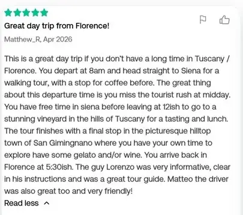
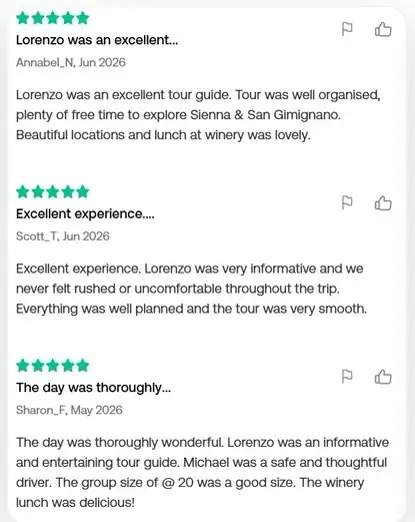
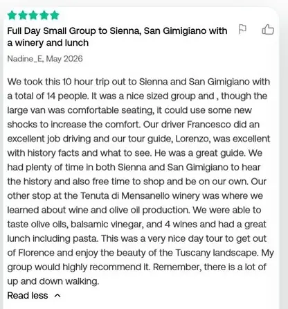
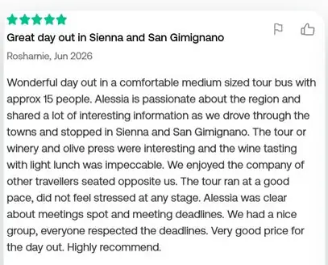
Real reviews from Tripadvisor, April–June 2026.
Before you book
Talk to a real person
Before you book, or while you travel. We answer.
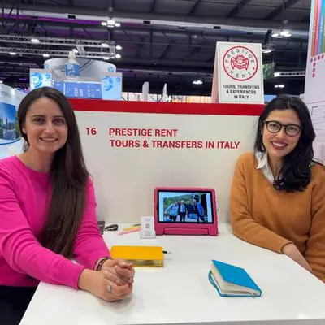
Have questions? Let’s chat!
Meet our native English-speaking experts, Violeta and Carrie. Whether you need custom logistics, dietary adjustments for the winery lunch, or simply want to ensure this is the perfect fit for your trip, they are here to help. Drop us a message!